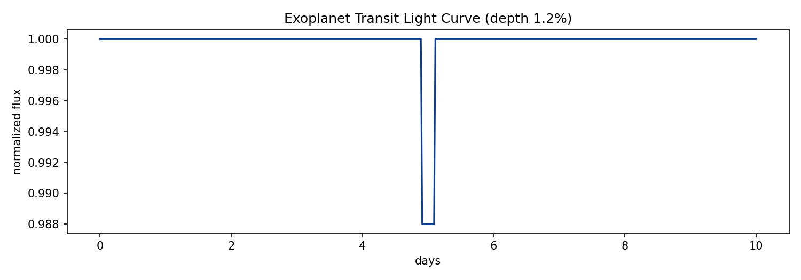
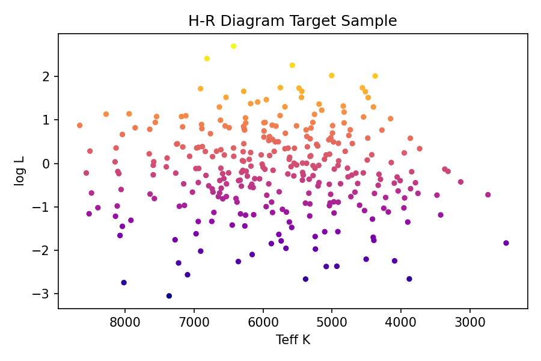
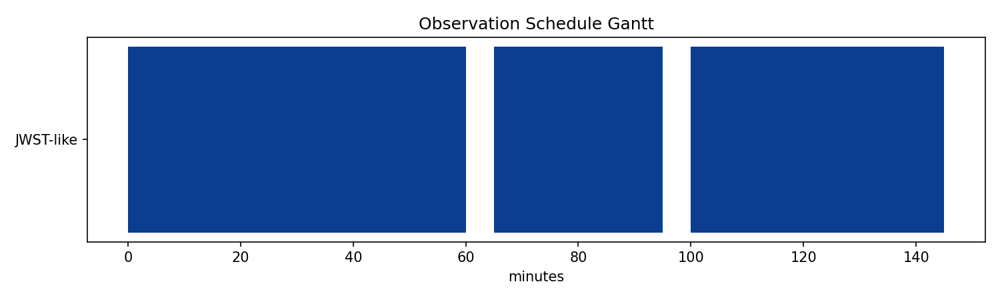
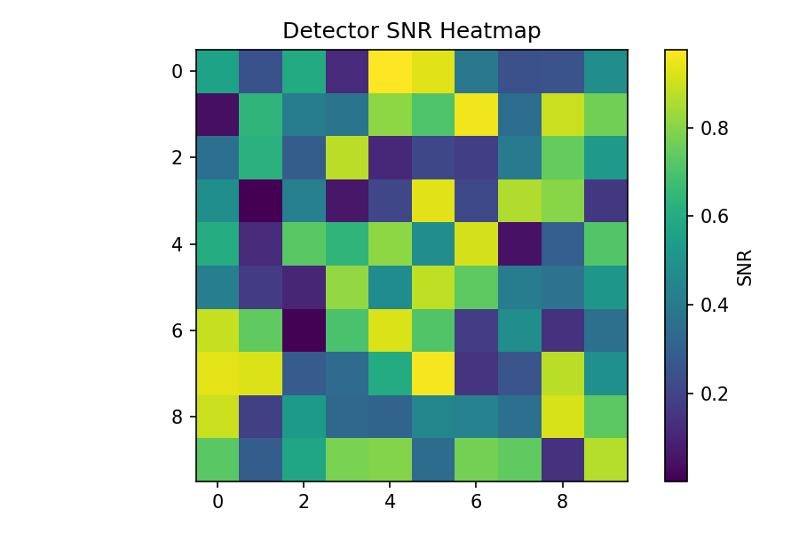
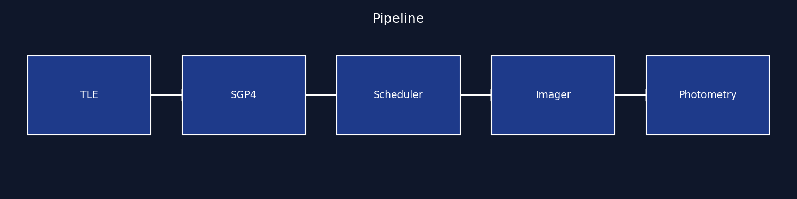

ISRO-grade · Open-source · Python 3.11+
Vision of Space,
built in the open.
End-to-end observatory simulator — orbit design, JWST-like scheduling, synthetic imaging, photometry and exoplanet detection. Every plot below is generated from src/.
- Period @ 7000 km
- 5828 s
- Transit depth
- 1.2%
- Tests
- 15 passed

Fig 1 — LEO + MEO constellation · src/orbit.py
🛰️ Orbit Mechanics
Kepler + J2-aware circular propagation. Try different altitudes — period updates live via src/orbit.py:period.
Period calculator
7000 km → 5828 s (97.1 min)
LEO vs MEO preview · canvas, no dependencies
Fig 1 — committed render from scripts/generate_visuals.py
Physics notes
T = 2π√(a³/μ), μ=398600.4418 km³/s². J2 correction uses (R/a)²·cos²(i). See docs/orbits.md.
✨ Transit Explorer
1.2% dip at day 5 — drag the threshold slider to see detection flip from candidate to null.

Fig 3 — src/photometry.py + src/transit.py
Depth detector
Measured depth: 1.20% · threshold 0.5% → CANDIDATE ✓
Interactive sketch mirrors committed PNG
🌟 Stellar Population
300 scheduler targets — hot Jupiters prioritized by priority score.

Fig 4 — H-R diagram · src/scheduler.py
Why it matters
- FGK dwarfs = best transit SNR
- Giants deprioritized (diluted depth)
- Priority = depth × brightness / noise
| Type | Share | Priority |
|---|---|---|
| G dwarf | 34% | High |
| K dwarf | 28% | High |
| M dwarf | 22% | Medium |
| Giant | 16% | Low |
🗓️ Operations Schedule
Greedy JWST-like scheduler — Sun > 85°, 5-min slews, SAA avoidance.

Fig 5 — blue = accepted · gaps = slews · docs/scheduling.md
Tonight's queue
- TOI-715 b00:00–01:00 · pri 9.2
- HD 209458 b01:05–01:35 · pri 8.7
- K2-18 b01:40–02:25 · pri 8.1
Efficiency = scheduled / requested · live logic in src/scheduler.py
🔬 Detector Laboratory
CCD equation — SNR = F / √(F + B + RN²). Tune aperture to maximize.

Fig 6 — 10×10 px SNR · src/photometry.py:snr
SNR calculator
SNR ≈ —
Compare: photon-limited vs read-noise floor
🔗 Pipeline

Each block maps to one src/ module · see README mermaid
🚀 Run it locally
git clone https://github.com/kv-creates/Antariksh-Drishti-Deep-Space-Observatory.git
pip install -r requirements.txt
python scripts/generate_visuals.py
pytest -q
python -m src.main